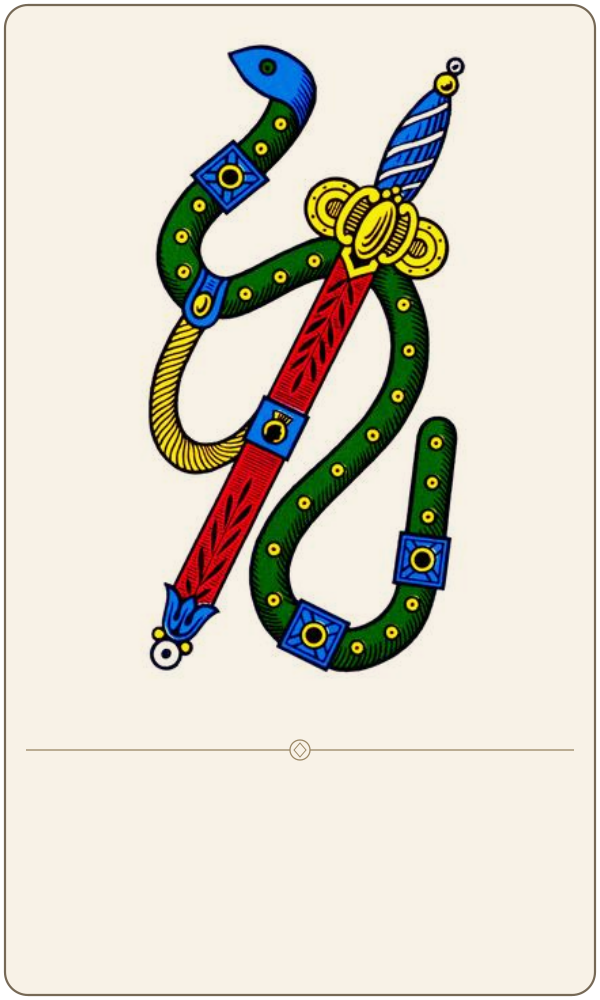
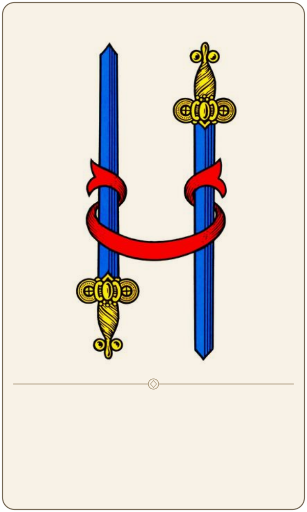
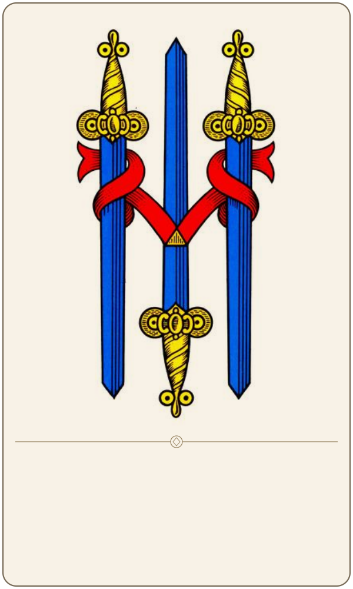
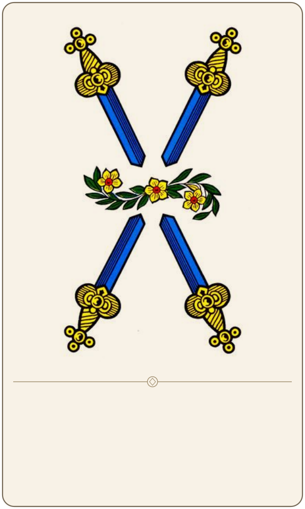
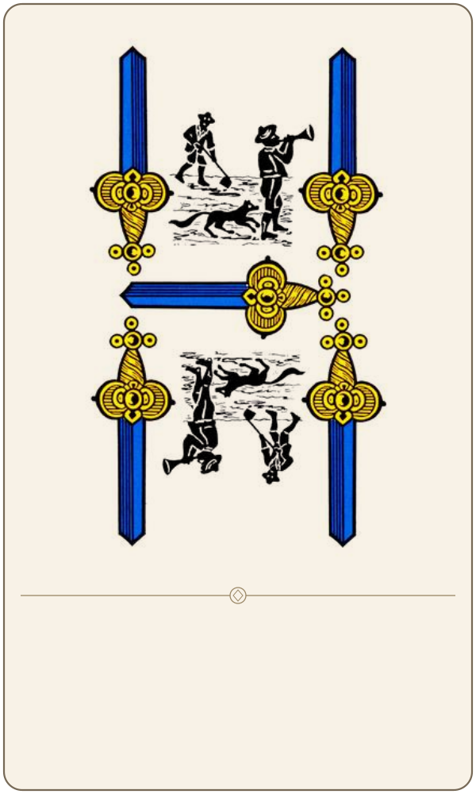
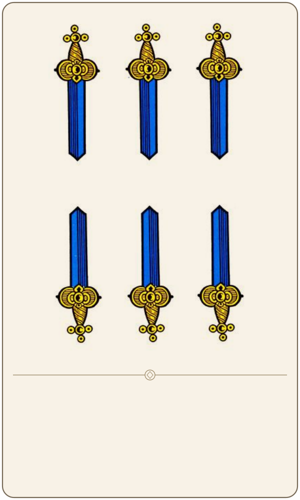
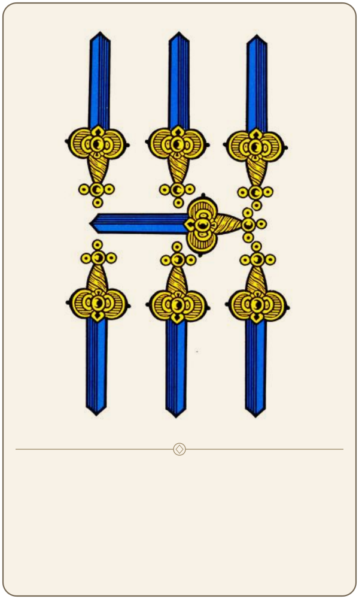
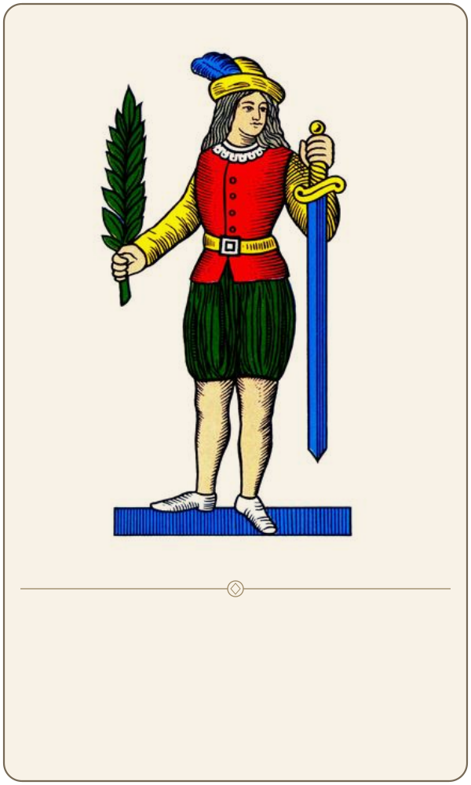
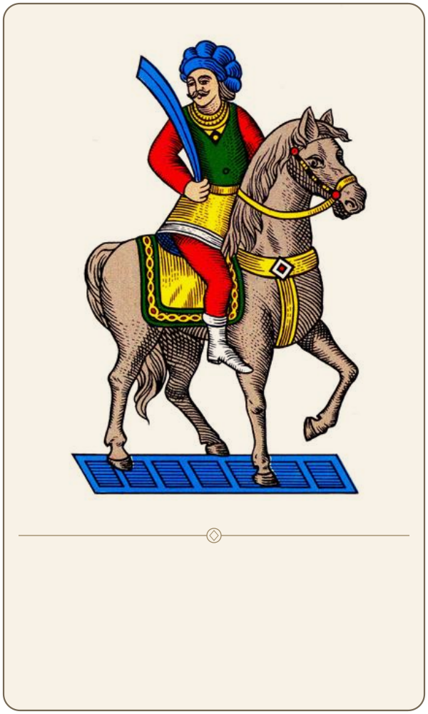
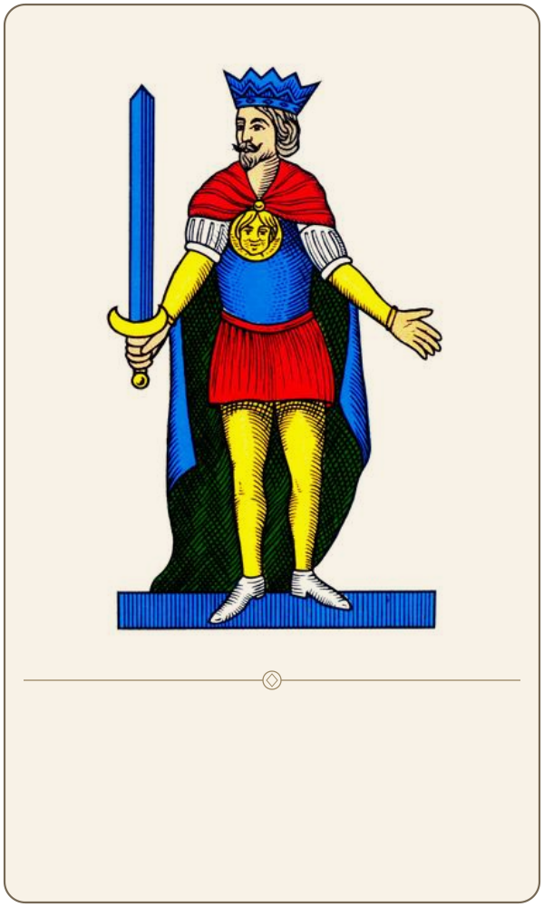

Spade napoletane — originali
Asso, 2–7, Fante, Cavallo, Re: disegni originali preservati, impaginati con un piccolo sigillo sul divisorio. Bozza per approvazione. Provenienza e licenza




























